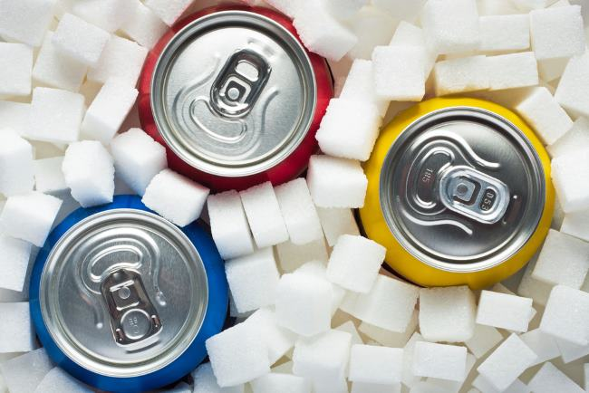

Bahaya Minum Soda Diet terhadap Risiko Diabetes
Bahaya minum soda diet terhadap risiko diabetes penting untuk diketahui.
Pasalnya, banyak orang yang menganggap soda diet aman dikonsumsi sehari-hari,
termasuk oleh penderita diabetes, karena kandungan kalori dan pemanisnya lebih sedikit.
Padahal, minuman ini tidak terbukti lebih sehat.
baca selengkapnya
Seputar Denyut Nadi Normal dan Cara Tepat Menghitungnya
Denyut nadi normal merupakan tanda bahwa jantung bekerja dengan baik.
Nah, denyut nadi yang terlalu lemah atau terlalu cepat bisa disebabkan berbagai hal.
Untuk mengetahui denyut nadi normal, simak cara mengukurnya dalam pembahasan berikut ini.
baca selengkapnya
Ketahui Batas Penderita Kolesterol Makan Telur
Sebagian orang mungkin masih mempertanyakan, bolehkah penderita kolesterol makan telur.
Pertanyaan tersebut muncul karena telur termasuk makanan yang mengandung tinggi kolesterol.
Disisi lain, telur juga menyimpan banyak nutrisi penting. Untuk mengetahui faktanya, simak penjelasan berikut
baca selengkapnya
Kenali Pepaya, Si Pemutih Kulit Alami
Beberapa produk perawatan kulit seperti krim wajah maupun krim tubuh,
menggunakan pepaya sebagai salah satu bahan pembuatannya. Pepaya diperkirakan
bagus untuk dijadikan pemutih kulit alami karena mengandung nutrisi di dalamnya.
baca selengkapnya
Beragam Cara Mengecilkan Lengan yang Bisa Dicoba di Rumah
Mempunyai lengan besar dan menggelambir memang sangat mengganggu penampilan.
Terlebih lengan merupakan bagian tubuh yang kerap terlihat meski sudah tertutup baju sekalipun.
Namun tenang, ada cara mengecilkan lengan yang mudah dilakukan.
baca selengkapnya